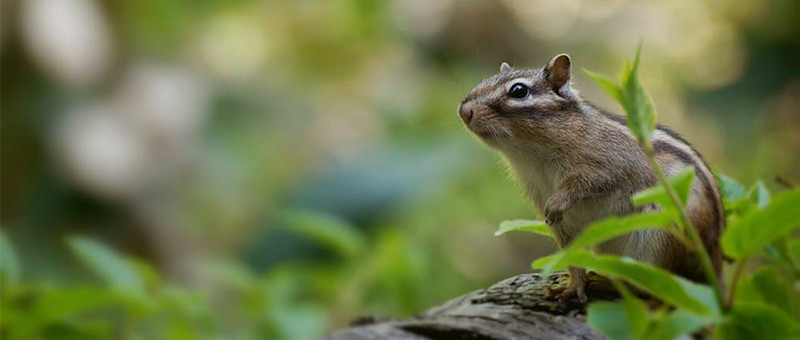
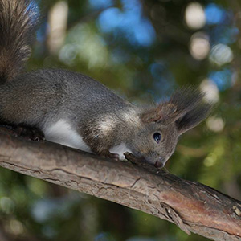

最新消息
| 2016.11.10 | 追加了啼兔的照片！ |
|---|---|
| 2016.11.03 | 參加札幌明信片展。 |
| 2016.10.30 | 在一億人的照片展覽會推出作品！11月5、6日這兩天，作品都會在車站展示。 |
寫真藝廊
西伯利亞粟鼠


蝦夷粟鼠
- 


魚貓頭鷹


啼兔


網站簡介
這是MORIKO針對住在北海道的動物拍攝的寫真網站。如果有拍到好的照片就會常常更新。
經營者 MORIKO
從小就喜歡大自然與動物，長大成人後，雖然忘記這份心情，但在因緣際會之下，一頭栽進攝影的世界，並以北海道的動物們為主要的拍攝對象。常在圓山公園拍攝松鼠與野鳥。還在學習相機的使用。最喜歡的動物有啼兔與十姐妹。
相機：Nikon D810 鏡頭：Nikon AF-S NIKKOR 300mm f/4E PF ED VR